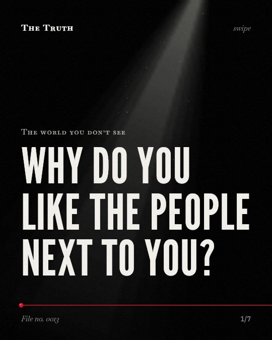

The world you don’t see
Why do you like the people next to you?

Proximity is not your only friend maker.
Physical closeness is a significant factor, but it works alongside similarity and social context. The evidence on which factor is most dominant is mixed.
Supported. At least one solid peer-reviewed study. The evidence is mixed.
What the research found
Fear of rejection reduces the strength of the relationship between direct behaviors and affective attraction.
“evaluative threat salience (e.g., fear of rejection) reduced the magnitude of the relation between direct behavior and affective attraction.”
Meta-analysis, 2018. Montoya et al., Psychological Bulletin.
Proximity based on coresidence, balancing, and homophily regarding nonracial categories influence the tie formation process more than does racial homophily.
“Balancing, propinquity based on coresidence, and homophily regarding nonracial categories (e.g., students from "elite" backgrounds or those from particular states) all influence the tie formation process more than does racial homophily.”
Observational study, 2010. Wimmer & Lewis, AJS; American journal of sociology.
Direct behaviors like physical proximity and talking to someone are more strongly related to self-reported attraction than indirect behaviors like eye contact or smiling.
“direct behaviors (e.g., physical proximity, talking to), compared with indirect behaviors (e.g., eye contact, smiling, mimicry), were more strongly related to self-reported attraction”
Meta-analysis, 2018. Montoya et al., Psychological Bulletin.
Geographic propinquity, families, organizations, and isomorphic positions in social systems create contexts in which homophilous relations form.
“Geographic propinquity, families, organizations, and isomorphic positions in social systems all create contexts in which homophilous relations form.”
Review, 2001. McPherson et al., Annual Review of Sociology.
Similarity breeds connection across many types of relationships, including friendship.
“Similarity breeds connection. This principle—the homophily principle—structures network ties of every type, including marriage, friendship, work, advice, support, information transfer, exchange, comembership, and other types of relationship.”
Review, 2001. McPherson et al., Annual Review of Sociology.
The mechanics of your social circle.
Proximity, shared organizations, and geographic locations create the context for ties. However, similarity and the way you behave toward others also shape who you bond with.
The invisible architecture of your life.
That may be why you find yourself bonded to people you happen to see every day. Your social circle is a product of shared space and common traits.
This part is our reading of the evidence, not a finding.
The routine of the office.
You sit at the same desk every morning. You share the same workspace and schedule. You find yourself talking to the person in the next chair over.
The honest summary
The evidence shows that while proximity is a significant factor in forming social ties and attraction, it is not the sole predictor and is often influenced by similarity and social context.
The sources do not provide a definitive ranking of which factor—proximity, similarity, or social balancing—is the most dominant in forming a friendship.
Who are you friends with by design?
Sources
- R. Matthew Montoya, Christine Kershaw, Julie L. Prosser (2018). A meta-analytic investigation of the relation between interpersonal attraction and enacted behavior.. Psychological Bulletin. Meta-analysis, cited 58 times.
- Miller McPherson, Lynn Smith‐Lovin, James M. Cook (2001). Birds of a Feather: Homophily in Social Networks. Annual Review of Sociology. Review, cited 18,880 times.
- Wimmer A, Lewis K (2010). Beyond and below racial homophily: ERG models of a friendship network documented on Facebook. AJS; American journal of sociology. Observational study, cited 704 times.
Also read for this file, not quoted
- Duque-Trujillo et al. (2022). Strategies for the attraction and conservation of natural pollinators in agroecosystems: a systematic review.
- Small & Adler (2019). The Role of Space in the Formation of Social Ties.
- Kudo & Simkin (2003). Intercultural Friendship Formation: the case of Japanese students at an Australian university.
This file was researched and drafted by software, then checked by rules a model cannot talk its way around: each quote above was matched word for word against the paper, and every number had to appear in it. How files are made.